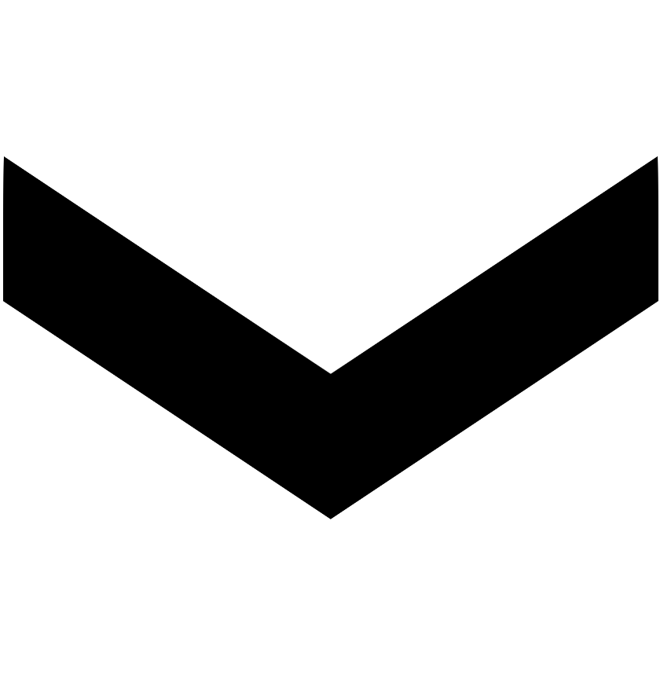
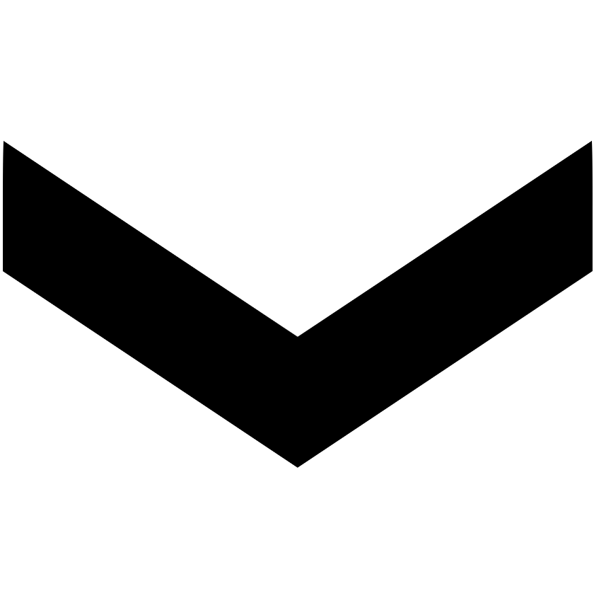
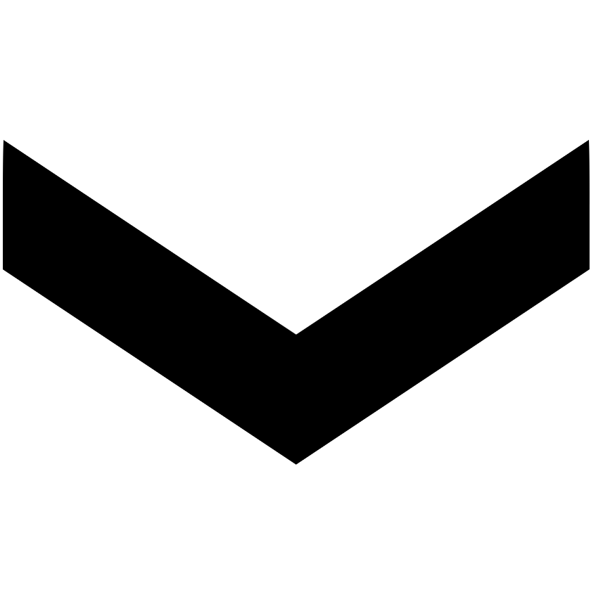

O.N. SQUASH
 

O.N. SQUASH

THE GAME FOR EVERYONE
LE JEU POUR TOUS

The Ontario squash community has taken a large hit following the
COVID-19 Pandemic. In 2019, over 1000 boys participated in
professional squash tournaments. Today, that number is less than 200.
O.N. Squash aims to revive the squash community,
and get more shoes on courts!
Through two pages and a quiz, your squash knowledge will be improved and tested.
Do YOU have what it takes to be a squash pro?
It's time to find out...
As you can see above, squash is about as popular as racketball today.
Furthermore, the majority of squash pros are Egyptian - which is a large part of why squash can never be an Olympic sport.
Many people are afraid to try squash, because it seems too complicated - and they're right! However, it doesn't matter how good you are.
Everybody starts somewhere - take Ali Farag, former world #182, and current world #1.
That being said, former champion Gregory Gaultier dropped from #13 to # 97 - proving just how close the squash competition is.
And we all know, the closer the competition, the more exciting the match.